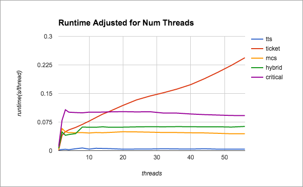

Authors and Contributors
Nat Jeffries (@njeffrie) Madhav Ieyngar (@miyengar)
Summary
We are implementing a locking library which adapts the type of lock used internally as well as takes advantage of the transaction instructions available on Intel processors.
Background
Locks perform better on some workloads than on others, and it's often difficult to figure out which type of lock should be used when the workload is not well defined. It becomes even more difficult when new locking constructs are available, such as Intel's new transaction instructions. There is lots of research on locking and which locks perform best on which workloads, and we are planning to build on that information to implement a workload-sensitive lock which dynamically changes the type of lock used internally to protect each critical section in a piece of code.
The Challenge
This is a challenging project for several reasons. First, we will need to implement several existing locks and benchmark them with a variety of workloads. We will then need to figure out exactly how to transition between types of locks without breaking any of the critical section invariants guaranteed to the programmer. We also will be playing around with atomic transactions available on newer intel processors, and deal with the possibilities of transitioning between atomic transactions to protect our critical sections, and traditional locking.
Resources
We will be doing most of our testing on the Xeon Phi multiprocessor machines available in the latedays cluster. If time permits we may experiment with additional machines or architectures.
Deliverables
-Accurate benchmarks for simple spinlocks, sleeping mutexes, MCS Spinlocks, Readers-Writers locks, and optimistic atomic transactions. -Expose a simple locking API which encapsulates several locking mechanisms, and chooses between them based on the workload encountered. -Demonstrate measurable speedup over traditional locking when faced by a changing workload
Goals
-Intelligently choose which locks to use based on system architecture -Demonstrate comparable performance when compared to well-chosen locking on a static workload -Implement traditional benchmark algorithms with our locks and show performance relative to traditional locks
Expectations
-Present graphs of speedup over traditional locks -Present at least one example workload program, and how to replace traditional locks with our library
Platform Choice
We plan on developing for linux, specifically the Xeon Phi hardware platform available on latedays. We hope to extend our implementation to other architectures.
Schedule
Week of 4/4 - Begin implementing locks. Download and begin experimenting with benchmark suites. Week of 4/11 - Finish Implementing and testing versions of spinlocks, mutexes, MCS spinlocks, and readers-writers locks. Demonstrate at least spinlocks, mutexes, and readers-writers locks for midpoint demo, as well as benchmarks gathered. Week of 4/18 - Combine locks under single API, develop logic to transition between them. Week of 4/25 - Complete implementation, begin tuning when to choose what lock based on benchmarks gathered at the beginning. Week of 5/2 - Finalize implementaiton, experiment changing architecture if time allows. Finalize webpage before 5/7. 5/9- Parallelism Competition
Progress
We have implemented and verified multiple spinlock implementations for the xeon phi: test-and-test-and-set lock with exponential back-off (TTS), ticket-lock with proportional back-off (ticket), and MCS local-spinning queue-lock (MCS). We have profiled the performance of these locks on the xeon phi while varying the level of contention. Between the two fair locks (MCS and ticket), MCS provides scaling linear to the processor count while ticket observes lower latency under lower contention. In addition to very low latency, the TTS lock shows by far the best performance, however this is primarly due to the unbounded unfairness of the TTS lock allowing it to abuse our artificial workload.
We have also designed and implemented a new adaptive lock whose purpose is to capture the lower latency of the ticket lock under low contention while maintaining the good scaling of the MCS lock. This hybrid lock alternates between ticket and MCS funcitonality based on current contention, removing the additional atomic operation of the MCS lock from the critical path under lower contention. Unfortunately, due the need to maintain additional state, the hybrid lock sees additional latency when compared with MCS lock, though it maintains the scaling.
Results
We have produced several locks based on the paper by Michael Scott and John Mellor-Crummey. We have implemented an mcs ticket lock, mcs local-spinning list based lock, test and test and set lock (tts), and our own hybrid lock implemention, which combines the low latency of ticket locks under low contention and the local spinning (avoiding cache invalidations) of the mcs list based lock under high contention. We demonstrate that our lock performs better under low contention then a the mcs list spinlock and better under high contention than the mcs ticket lock, instead scaling like the mcs list spinlock.
Additionally, we found that maintaining a perfectly fair lock can be costly when compared to unfair implementations such as the test and test and set lock, when running on micro-benchmarks where fairness is not required. We assert that the cost of maintaining fairness is worthwhile, and that all three of our fair locks present a large improvement over the OpenMP critial construct.
Below, we present some preliminary results comparing the performance of the locks we have implemented to OpenMP critical under various levels of contention.
Below, we present some results comparing the fairness of locks across 10 threads, indicated by the number of iterations the last thread must wait before obtaining the lock for the first time. Lower numbers indicate a fairer lock.
Below, we present raw performance values for the various types of locks between 1 and 59 threads. Observe that the scaling of our hybrid lock follows the mcs scaling as the contention increases.
Below, we present performance normalized to number of threads in order to demonstrate the scaling of each lock type. Notice that the hybrid lock follows the mcs lock for high contention, and follows the ticket lock for low contention, representing a good choice across a varying workload.
